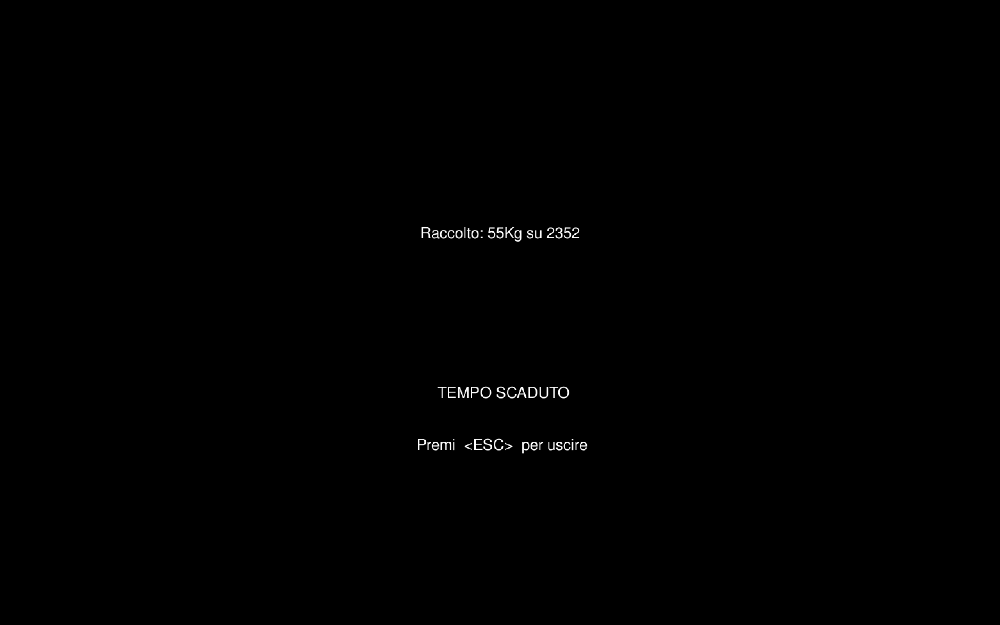

ABOUT MY FARM
MyFarm è un videogioco 3D in terza persona interamente sviluppato in C++ mediante l'ausilio delle librerie OpenGL ed SDL in ambiente *nix come progetto finale per il corso di Grafica tenutosi nell'anno 2015/2016 dal prof. Giulio Casciola presso l'Università Alma Mater degli Studi di Bologna. In questo sito web sono presentati gli step che hanno permesso la creazione di MyFarm. Particolare attenzione sarè data alle funzioni utilizzate per la creazione degli oggetti nella scena, della scenografia, dell'illuminazione, nonché delle texture che sono state impiegate.
INTRODUZIONE
Il progetto MyFarm si ispira al progetto Car mostrato a lezione. In esso una monoposto era libera di muoversi nella scena e seguire un circuito. Il primo passo è stato sostituire la monoposto con il trattore protagonista del nostro gioco. La carlinga della monoposto è stata sostituita dalla carrozzeria del trattore e lo stesso è stato fatto per le ruote. Risetto alla monoposto è stato aggiunto un volante che si muove insieme allo sterzo. Quest'ultimo e le ruote sono animate attraverso l'utilizzo delle funzioni glRotate e glTranslate. I movimenti nella scena sono soggetti alle leggi fisiche del mondo e sono implementati seguendo le dinamiche usate nel progetto Car.
Per mantenere delle prestazioni accettabili, è molto importante fare attenzione al numero di poligoni delle mesh utilizzate. Per questa ragione, tutte le mesh utilizzate nella scena, sono state scelte controllando la complessitaà delle loro geometrie. Questo è stato possibile importando le mesh in blender, dove le mesh sono state anche modificate e successivamente esportate nel formato obj. Quasi sempre si sono ottenuti più file obj dalla stessa mesh, poichè la mesh originale è stata scomposta in parti più piccole per motivi di gestibilità e personalizzazione (colore e/o texture).
SCOPO DEL GIOCO
MyFarm è una rappresentazione di una fattoria nella quale il giocatore deve raccogliere più kg di mais possibili in 1 minuto. Il trattore è posto al centro della scena e da qui l'utente può muoversi per la scene e raccogliere il mais dai campi che lo circondano. Ogni qualvolta un blocco di mais viene investito il raccolto incrementa di 1 kg.

INTERFACCIA E COMANDI
L'interfaccia è composta da pochi semplici elementi. Quello più evidente è senza dubbio la mappa 2D della scena. In essa sono visibili la posizione del trattore nella scena (punto blu) e quella del mais che non è stato ancora raccolto (punti rossi). Contro i bordi laterali della finestra sono rappresentate con tre barre 2D le informazioni riguardo fps per secondo, percentuale del mais raccolto e il tempo rimanente. Le barre differiscono per altezza e colore, elementi che cambiano anche durante la partita per rappresentare dati diversi. La barra dei frame per secondo (estrema sinistra) varia tra il rosso (minimo) e il blu (massimo) passando per il viola. Sempre sul lato sinistro è visibile la barra del raccolto. Inizialmente vuota cresce in proporzione al mais raccolto e cambia colore partendo da un rosso iniziale fino al verde per le percentuali maggiori. Dal lato opposto della finestra (estrema destra) è presente la barra del tempo. Essa parte da piena e cala col passar del tempo. I colori usati sono sempre il verde e il rosso, che aiutano a inquadrare meglio la situazione temporale. L'ultimo elemento è una scritta che indica in modo testuale i kg di mais raccolti fino a quel momento.

Attraverso l'uso della libreria SDL è creato il ciclo degli eventi che permette di gestire tutti gli eventi in input forniti dall'utente. Nella modalità camera libera è possibile ruotare il punto di vista, mediante il trascinamento e la pressione del tasto sinistro del mouse, mentre tramite lo scroll si controlla lo zoom. Questi comandi sono stati gestiti attraverso l'utilizzo degli eventi SDL_MOUSEMOTION e SDL_MOUSEWHEEL. L'accelerazione (positiva e negativa) e lo sterzo sono controllati da tastiera o Joystick. Attraverso glie eventi SDL_KEYDOWN e SDL_KEYUP si può verificare la pressione di uno tra i pulsanti W, A, S, D utilizzati per il movimento del veicolo. Al verificarsi di questi eventi le chiamate alle funzioni EatKey e DoStep modificano i parametri della classe Tractor che definiscono la sua posizione nella scena e quindi i suoi spostamenti quando sarà chiamata la funzione Render. In alternativa a questi tasti, il trattore può essere controllato anche attravero un Joystick esterno. Gli eventi SDL_JOYAXISMOTION, SDL_JOYBUTTONDOWN e SDL_JOYBUTTONUP, mappati dalla funzione Joy nei comandi corrispondenti, ci permettono di utilizzare il movimento del joypad e la pressione dei pulsanti come alternativa ai pulsnati W, A, S, D. Oltre ai pulsanti citati sopra sono attivi anche i pulsanti ESC, utilizzato per uscire dalla schermata finale, e i pulsanti F1 F2 F3 F4 F5. Questi danno la possibilità di cambiare tra le posizioni definite per la camera, osservare il mondo in wireframe, utilizzare una carrozzeria differente (texture), attivare le luci frontali del trattore e nascondere l'ombra del veicolo.
IMPLEMENTAZIONE
In questa sezione sarranno illustrati in modo più dettagliato le scelte implementative che sono state adoperate nella creazione di questo progetto.
Il Trattore
È l'elemento principale della scena. La sua mesh è stata scaricata da internet e poi modificata attraverso blender. Le modifiche effettuate sono state la rimozione di parti superflue, la separazione delle ruote e infine la divisione per colore. In questo modo è stata generata una mesh per ogni colore e una mesh per ogni oggetto che si muove, per qualche grado di libertà, in maniera indipendente dalla corpo del trattore.

La rotazione delle ruote è implementata tramite l'uso di glRotate. L'asse di rotazione varia a seconda delle ruote. Tutte le ruote ruotano attorno all'asse x, simulando l'avanzamento del veicolo, mentre le ruote anteriori ruotano anche sull'asse verticale per simulare lo sterzo. Prima di applicare ogni rotazione gli oggetti sono sempre stati traslati al centro della scena e successivamente riposizionati nella loro posizione originale. Questo serve per evitare perdita di allineamenti tra le parti della vettura, siccome la rotazione è sempre applicata rispetto al centro della scena. Come le ruote, anche il manubrio subisce delle rotazioni equivalenti alla metà del valore dello sterzo. La rotazione del volante è più difficile siccome il volante oltre ad essere traslato al centro va anche ruotato di un 45 gradi (inclinazione del manubrio) prima di poter essere ruotato dell'angolo di sterzo. Questa procedura è necessaria per poter ruotare il volante attorno ad un asse standard. Ogni mesh che compone il trattore è stata colorata utilizzando colori differenti e alle ruote e alla carrozzeria sono state applicate anche delle textures. Utilizzando la generazione automatica delle cordinate texture è stato utilizzato GL_EYE_LINEAR per mappare l'immagine scelta su tutta la superficie della carrozzeria. Alle ruote è stata applicata una texture personalizzata generata da me utilizzando la generazione di coordinate automatiche e il parametro GL_OBJECT_LINEAR.
Terreno & Granoturco
Nella versione fornita dal professore il terreno era composto da una serie di GL_QUADS, colorati con differenti toni di verde. Questa versione è stata modificata mantenendo la struttura, ma aggiungento una texture, mappata fornendo le coordinate esplicite della texture. Per fare ciò le cordinate 2D dell'immagine scelta, sono state associate alle coordinate 3D dei quad disegnati.
Il granoturco è rappresentato similarmente. Un singolo blocco di granoturco consiste in un parallelepipedo a cui sono applicate 2 textures diverse. Una per i lati e una per la faccia superiore del solido. Le 2 texture sono sempre applicate manualmente mappando le immagini sul solido. Una terza texture è utilizzata per disegnare il terreno brullo che sostituisce il granoturco raccolto. Anche in questo caso viene disegnato un quad a cui viene assegnata manualmente la texture. Per evitare problemi di visualizzazione questo quad è situato ad un altezza leggermente superiore dell'erba.
Una volta generato un blocco, questo è disegnato ripetutamente della scena in posizioni diverse. Una matrice, con dimensioni pari al numero di quads di terreno disegnati, memorizza un intero che può essere 0, 1 o 2. In base al numero memorizzato il metodo drawFloor disegnerà nella posizione corrente sarà disegnata solo erba, erba più mais (drawCornBox) o erba e terra brulla (drawCornGround). Questa matrice è inizializzata prima del ciclo degli eventi, ma volendo potrebbe essere inizializzata da file rendendo la disposizione del granoturco più artistica e fantasiosa. La funzione DoStep aggiorna, ad ogni movimento del trattore, la matrice e in questo modo il granoturco è automaticamente distrutto e sostituito dalla terra brulla.
Il Cielo
I metodi drawSphere e drawSky si occupano del rendering dello sfondo. Il primo genera una sfera a cui viene applicata una texture a tema cielo con il secondo metodo. Quando la modalità wireframe è attiva la visualizzazione del cielo cambia e tramite il metodo glPolygonMode e il parametro GL_LINE si rappresenta il cielo utilizzado righe nere e facce bianche.
Fattoria, Staccionata e Spaventa passeri
Questi tre elementi insieme all'erba e al granoturco completano la scena. Il primo, la fattoria, è una mesh scaricata da internet e poi divisa in diversi file obj per poter disegnare i diversi dettagli con colori diversi. Consiste in una mesh composta da pochi poligoni in cui si distinduono il tetto, il segnavento sul tetto, una trave, il portone e le finestre. Tutti questi elementi sono stati generati utilizzando colori opachi salvo le finestre per le quali si è creato un effetto trasparenza. Questo è possibile utilizzando GL_BLEND, GL_ALPHA e aggiungendo il parametro alpha al colore scelto. In questo modo inserendo un valore alpha vicino a 0 è possibile simulare un effetto vetro. La staccionata è anchessa disegnata attraverso l'uso di una mesh. Questa è stata generata in Blender partendo da un singolo elemento e duplicandolo, con il modificatore vettore, fino a raggiungere la lunghezza desiderata di 60 metri. Questi blocchi da 60 metri di staccionata sono stati posizionati con le funzioni glTranslate e glRotate a comporre un quadrato di dimensione 120m x 120m attorno all'origine. Lo spaventa passeri è sempre generato da una mesh presa online e posizionato con la funzione glTranslate all'esterno della staccionata. Al posto della faccia, sotto al cappello è presente un rettangolo su cui è stata applicata la mia faccia settando le cordinate della texture manualmente.
La staccionata definisce i limiti dell'area di gioco. Nella funzione DoStep, all'aggiornamento della posizione del trattore, si verifica che le mesh del trattore non entri in collisione con la staccionata o la fattoria. Questo controllo è semplicemente implementato controllando che la posione del trattore sia inclusa in un range che coincide con lo spazio all'interno del recinto unito alla fattoria.
Illuminazione
La scena è illuminata da una luce dichiarata nel main come GL_LIGHT0 e definita nel metodo rendering. Si tratta di una luce puntiforme posizionata in un punto fisso che illumina la scena dall'alto. I raggi luminosi emessi si diffondono in tutte le direzioni. Il tipo di luce emesso da LIGHT0 è definita da un vettore RGBA, che nel nostro caso è uguale a (0,1,2,0). Oltre a questa luce sono presenti altre due sorgenti luminose, montate sul trattore a simulare i fanali anteriori. Di esse sono state settati i parametri GL_DIFFUSE, GL_AMBIENT, GL_SPOT_DIRECTION, GL_SPOT_CUTOFF, GL_SPOT_EXPONENT, GL_CONSTANT_ATTENUATION e GL_LINEAR_ATTENUATION per definire la direzione della luce, la sua intensità la sua attenuazione e tutte le loro caratteristiche.
L'Ombra
L'ombra è una funzione attivabile attiva solo sul trattore. Essa non fa altro che disegnare la mesh del trattore, scalata fino ad essere piatta, sopra al terreno. La funzione glScale ci permette di ridimensionare e appiattire la mesh, mentre attraverso il parametro usecolor si controlla il colore del trattore, che per default è settato a nero.
Telecamera
Il metodo setCamera si occupa di modificare, con uno switch, i parametri di vista dell'utente che sono successivamente passati al metodo gluLookAt. Sono disponibili 5 modalità diverse.
- CAMERA_BACK_CAR mostra la scena da dietro il trattore.
- CAMERA_TOP_FIXED posiziona la telecamera affianco alla ruota anteriore sinistra, ma ruotata verso la cabina del trattore, fornendo una vista fissa sul veicolo.
- CAMERA_TOP_CAR fornisce una visuale da dietro e sopra del trattore.
- CAMERA_PILOT mostra la scena da dentro la cabina.
- CAMERA_MOUSE la camera guarda fissa l'origine della scena, ma con l'utilizzo del mouse è possibile ruotare la visuale e avvicinarsi o allontanarsi. Questo è reso possibile grazie alle operazioni di glTranslate e glRotate sui parametri eyeDist, viewBeta e viewAlpha
Interfaccia
Per progettare l'interfaccia di gioco è stato necessario settare le matrici di trasformazione sullo spazio 2D, in modo che si disegni direttamente sulle coordinate dei pixel dello schermo. Questo è stato possibile grazie al metodo SetCoordToPixel che imposta correttamente le matrici di proiezione e di trasformazione prima di disegnare a schermo usando nuovamente le primitive OpenGL. L' interfaccia è composta da diversi elementi:
- Barre Laterali - Tre barre colorate che mostrano fps, tempo e raccolto. Sono state realizzate tramire GL_QUADS, variando la loro posizione lungo l'asse x e la loro altezza proporzionalmente con i valori che devono mostrare. I colori dipendono dal valore attuale del dato rappresentato.
- Minimappa - In alto a sinistra è stata posizionata una minimappa su cui sono disegnati in blu il trattore e in rosso le posizioni del granoturca da raccogliere. La posizione di questi elementi viene calcolata come semplice trasposizione dalle coordinate reali di essi nella scena. Mentre per disegnare la mappa è stata acora usata GL_QUADS gli elementi di essa sono rappresentati con GL_POINTS. Questa scelta è stata forzata dal grande nnumero di elementi da rappresentare nel poco spazio.
- Raccolto - Accanto alla minimappa è stato posto un testo raffigurante il raccolto attuale. Per realizzarlo è stata sfruttata la libreria SDL_TTF. Per utilizzare questa libreria è stato necessario inizializzarla tramite il comando TTF_Init nel main e caricare un font adeguato per la scrittura di testo (FreeSans.ttf). Siccome per poter scrivere su schermo in concomitanza con OpenGL, TTF non mette a disposizione una primitiva che permette una scrittura immediata in una certa posizione, è stata implementata la funzione drawText. Questa genera una SDL_Surface, su cui è scritto il testo, che viene trasformata in texture e applicata a un rettangolo generato nella posizione voluta.
Scherata Finale
Dopo 1 minuto di gioco il tempo termina e e viene attivato un nuovo ciclo degli eventi. A questo punto la scena scompare e viene mostrata la schermata di fine gioco con le informazioni riguardo il raccolto e le informazioni per uscire. In questo ciclo sono controllati unicamente gli eventi di tipo SDL_KEYDOWN, SDL_JOYBUTTONDOWN, SDL_QUIT e SDL_WINDOWEVENT. Il primi 3 sono usati, appunto, per garantire un'uscita sicura dal ciclo, mentre l'ultimo serve a mantenere il testo centrato anche in caso di modifica delle dimensioni della finestra di gioco. La funzione finalScreen si occupa di preparare la schermata finale, disegnado le scritte sulle cordinate 2D della finestra.
CLASSI POINT3 E MESH
La classe Point3, definita nel file point3.h, implementa il concetto di "punto in tre dimensioni" e contiene i metodi di base per operare con questi oggetti e, per questo scopo, sone stati ridefiniti la maggior parte degli operatori di base su di essi. Alla fine del file, viene creato un alias Vector3 per Point3 utilizzato col fine di distinguere semanticamente fra punti e vettori. La classe Mesh, invece, definita nel file mesh.h e implementata in mesh.cpp, contiene in realtà la definizione di quattro classi differenti: Vertex, Edge, Face e Mesh. Di particolare importanza è la classe Mesh che permette il caricamento di un file obj da file andando ad analizzare i tag e i valori presenti all'interno dell'obj stesso, per poi computare le normali per vertice e le normali per faccia, che garantiscono una determinata resa dell'oggetto caricato.
CONCLUSIONI
Il completamento di questo progetto necissitava di comprendere il funzionamento di OpenGL oltre che ai concetti di matrice di modellazione e proiezione. L'utilizzo di tale libreria e di SDL2 è stato soprattutto possibile grazie alla documentazione online e agli esempi visti e forniti durante il corso. Le maggiori difficoltà sono state incontrate nella fase iniziale di studio del progetto base, dal quale si è iniziato sostituendo le mesh del veicolo. Una volta consolidate le dinamiche necessarie per il disegno, traslazione e rotazione delle geometrie si sono affrontate le difficoltà insite nelle applicazioni delle texture. La difficoltà maggiore è stata incontrata nella creazione di una funzione che scrivesse il testo a video, ma dopo giorni di debugging si è riuscito a superare anche questo problema. Meno difficili sono state le fasi di modellazione 3D necessarie per la generazione delle mesh da importare nella scena. Questo solo per il fatto che ero già a conoscenza del funzionamento di Blender. Alla fine di questo progetto è stato generato un gioco coinvolgente con una scena piena e colorata che soddisfa tutte le richieste grafiche richieste inizialmente dal progetto.